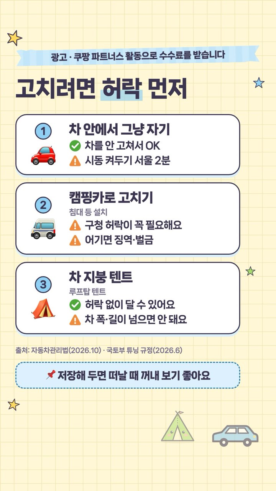

11번 영상
캠핑카로 고치기, 그냥 해도 될까?
쿠팡 링크는 아직 준비 중이에요. 아래 비교는 지금 바로 읽을 수 있어요.
차박 방법 3가지 비교
허락 없이 캠핑카로 고치면 징역 1년·벌금 1천만원 이하
자동차관리법
고치려면 허락 먼저
- 차 안에서 그냥 자기
- ✔ 차를 안 고쳐서 OK
- ⚠ 시동 켜두기 서울 2분
- 캠핑카로 고치기
- ⚠ 구청 허락이 꼭 필요해요
- ⚠ 어기면 징역·벌금
- 침대 등 설치
- 차 지붕 텐트
- ✔ 허락 없이 달 수 있어요
- ⚠ 차 폭·길이 넘으면 안 돼요
- 루프탑 텐트
출처: 자동차관리법(2026.10) · 국토부 튜닝 규정(2026.6)
